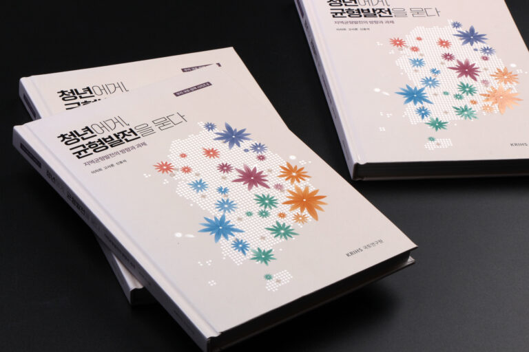
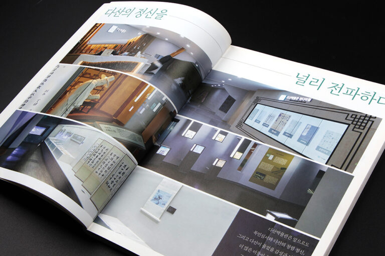
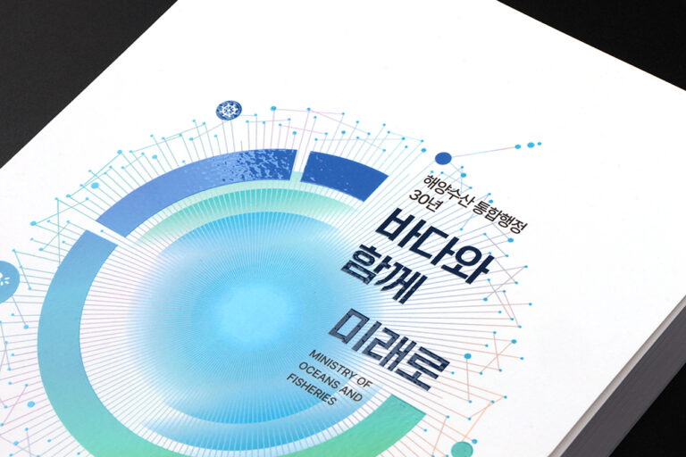
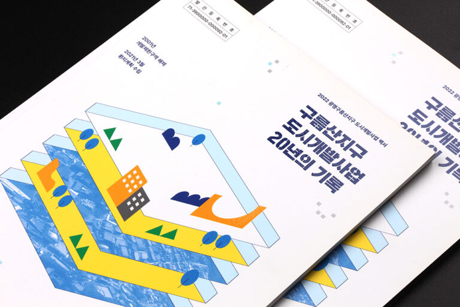

현장에서 쌓은 사례집 제작 이야기

공공기관
공공기관 사례집 제작, 시작과 끝을 가르는 한 가지
사업 보고서와 사례집의 목적을 구분하는 일이 제작의 방향과 완성도를 결정합니다.

문화·재단
문화재단 사례집, 제본방식에 따라 디자인은 달라집니다
무선, 중철, 양장 제본이 펼침면과 편집 방식에 어떤 차이를 만드는지 정리했습니다.

의료·복지
의료기관 사례집 인터뷰, 신뢰를 담는 질문법
환자와 의료진, 담당자의 이야기를 과장 없이 끌어내는 인터뷰 질문 설계 방법입니다.
교육
대학 사례집 원고, 방대한 자료를 지면에 앉히는 법
운영 보고서, 만족도 조사, 인터뷰 기록을 한 권의 원고 구조로 바꾸는 순서를 소개합니다.

지자체
지자체 우수사례집, 성과를 시민에게 전달하는 법
행정 용어를 줄이고 시민이 이해할 수 있는 이야기로 성과를 풀어내는 방법입니다.
금융·기업
기업 사례집, 브랜드 톤을 지면에 담는 법
사회공헌과 성과 사례를 기업의 목소리와 디자인 규칙으로 일관되게 정리하는 방법입니다.
공공기관
사례집 디자인 수정, 몇 번까지 어떻게 진행하나요
수정 요청이 늘어도 일정이 흔들리지 않도록 단계별 확인 방식을 정리했습니다.
문화·재단
종이와 후가공, 사례집의 인상을 정하는 선택
용지의 질감과 코팅, 박 가공이 책의 첫인상과 보관성에 주는 영향을 살펴봅니다.
의료·복지
사례집 사진 촬영, 현장에서 놓치지 않는 것들
인물과 공간 사진을 사례집 원고와 함께 계획하는 촬영 체크리스트입니다.
교육
사례집 배포와 활용, 완성 이후를 미리 계획하세요
인쇄본과 디지털 파일을 함께 활용하는 배포 계획의 기본 구조를 소개합니다.
지자체
사례집 속 인포그래픽, 숫자를 이야기로 바꾸는 법
성과 수치를 한눈에 이해시키는 도표와 인포그래픽 설계 원칙을 정리했습니다.
금융·기업
연간 활동 사례집, 일 년의 기록을 한 권으로 엮는 법
월별 활동을 나열하지 않고 주제별 이야기로 재구성하는 연간 사례집의 구조입니다.